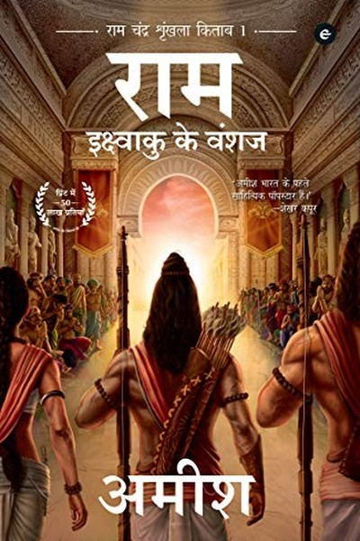

Library › Power & Strategy
Scion of Ikshvaku — Summary & Key Lessons

Ram who refused the throne — leadership as earned.
📖 OPEN THE FULL INTERACTIVE BREAKDOWN →🌐 Read it in Hindi, Hinglish, Gujarati, Tamil & 22 more languages — free, with audio.
💡 The Big Idea
The first book of the Ram Chandra Series reimagines Ram as a prince who rejects the throne: in a land where 'Vishnu' is a title earned by action, not birth, Ram's refusal of the crown is his first great act of leadership. Amish's themes: leadership is chosen, not inherited; duty is tested when it conflicts with love; and the greatest enemies are often the fears we carry. The book reframes the Ramayana as a story about the cost of doing right — and the strength it takes to pay that cost.
🧠 The 6 Key Lessons
Lesson 1: The Throne Is a Duty, Not a Prize
Part 1: The Refusal
Ram turns down the throne — not out of weakness but out of clarity: he knows he isn't ready, and taking power before readiness would betray the people. Amish's lesson: the best leaders are the ones who refuse power they aren't prepared for. The office-seeker who grabs authority too early becomes the bottleneck; the one who earns readiness first becomes the foundation. Refusing a role you can't yet serve is not rejection of responsibility — it is respect for it.
📖 Example: Ram's refusal shocks a court built on ambition — no one had ever rejected the crown. But his reasons are precise: he names his own gaps and chooses training over title. Years later, when he finally leads, he leads as someone who earned it. Read the full example →
⚡ Do this: Assess the next role you want. List the skills you lack for it — and choose one to build before you claim the role.
Lesson 2: Duty vs Love: The Test That Defines Character
Part 2: The Exile
The exile is the book's crucible: Ram chooses duty over comfort, and the choice costs him everything he loves. Amish's point: character is not revealed in easy choices — it is built in the ones where both options cost something real. The person who only does right when it's convenient has no character; they have a habit. Duty without love is cold, love without duty is chaos — the mature leader holds both, and the holding is the work.
📖 Example: Ram accepts exile without protest even though he could have fought the decision — not out of weakness but because breaking the kingdom's word would poison the institution he was born to serve. The cost is his; the institution survives. Read the full example →
⚡ Do this: Identify one decision where duty and desire conflict. Write both costs honestly — then choose, and own the cost without complaint.
Lesson 3: The Enemy Within: Fear Dressed as Duty
Part 3: The Fear
Amish's re-reading: some of Ram's harshest choices are driven less by justice than by fear — fear of what people will say, fear of appearing weak. The lesson: our worst decisions are often fear wearing the costume of principle. The leader who cannot tell the difference between 'this is right' and 'I'm afraid' will make cruelty look like virtue. The discipline: before every hard decision, ask — 'If I were completely unafraid, would I still choose this?' The answer reveals what's principle and what's panic.
📖 Example: Moments where Ram acts with unusual harshness coincide exactly with moments of fear — and Amish frames these as the human cost of leadership, the places where the myth becomes a man. Read the full example →
⚡ Do this: Before your next hard decision, ask the fear test: 'If I were unafraid, would I still do this?' Let the honest answer shape the choice.
Lesson 4: The Guru's Real Gift: Honest Feedback
Part 4: The Training
Ram's training under his gurus is shaped by brutal honesty — teachers who praise what is good and name what is weak without flattery. Amish's lesson: the most valuable mentor is not the one who makes you feel good but the one who makes you accurate. Flattery is a tax on growth; honest feedback is its investment. The person who seeks out critics who tell them the truth will outgrow the person who only collects admirers. Pay for feedback, not compliments.
📖 Example: Ram's gurus push him to his limits and tell him exactly where he falls short — the training is uncomfortable and precise. The excellence that follows is built on that honesty, not on encouragement. Read the full example →
⚡ Do this: Ask one brutally honest person: 'What's my biggest weakness you see but haven't told me?' Listen without defending.
Lesson 5: The Archer's Calm: Skill Without Anger
Part 5: The Weapon
Amish's Ram is a master archer whose power comes from stillness — the bow is drawn not in anger but in focus. The lesson: skill without emotional control is just danger; control without skill is just passivity. The professional's edge is the calm that lets precision happen under pressure. Anger may start the engine, but it destroys the aim. The practitioner who can stay calm in the storm — the negotiator, the surgeon, the founder — outperforms the one who fights with emotion.
📖 Example: In the book's archery trials, Ram's greatest shots come when he is calmest; the warriors who rage shoot wider. The stillness is not the absence of power — it is power aimed. Read the full example →
⚡ Do this: In your next high-pressure moment, take one slow breath before acting. Train the pause daily — it is the archer's calm.
Lesson 6: Vishnu Is a Title: Greatness Is Earned Daily
Part 6: The Becoming
The book's core reframe: 'Vishnu' is not a birthright but a title earned by those who protect dharma — anyone can become it, and holding it is a daily act. Amish's lesson: greatness is not an identity you're born with; it is a standard you meet repeatedly. The person who rests on yesterday's title has already lost it; the one who re-earns it daily compounds it. Your 'title' — expert, leader, winner — is only as real as today's work. Become it again every morning.
📖 Example: In this world, the title of Vishnu passes to whoever defends dharma in the moment — a constant, renewable standard rather than a permanent crown. Ram earns it not by birth but by action, again and again. Read the full example →
⚡ Do this: Write the title you want to be known by. List what 'earning it today' looks like — and do that before the day ends.
✅ 5-Step Action Plan
- List the skills you lack for your next role — build one before claiming it.
- Choose one duty-vs-desire conflict and own the cost consciously.
- Run the fear test before your next hard decision.
- Ask one honest critic for your real weakness.
- Define your title and earn it with today's action.
💬 Best Quotes from Scion of Ikshvaku
- “The throne is a duty, not a prize — take it only when you're ready to serve it.”
- “Fear dressed as duty is the hardest enemy to name.”
- “Greatness is a title earned daily, never a birthright.”
Interactive version: mark lessons as read, listen in your language, share quote cards.